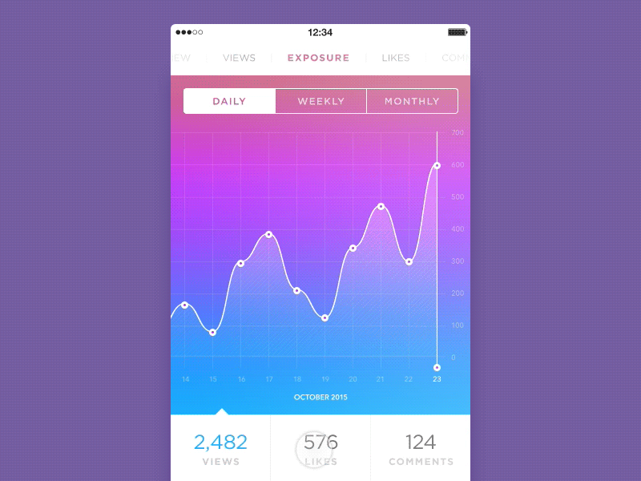

The Only Guide You Need on Software Development Process

If you are on reading this post, you definitely understand the importance of the process. The
software
development process is no exception here. If you follow the well-tested software development
processes,
you are sure to build amazing software. According to a survey by GoodFirms, adapting to the changing
client requirements is the most challenging part of the development process for software developers.
Being a leading software development company, we decided to solve these issues once and for all. In
this
article, you will read about what software development lifecycle is, what are stages of the software
development process, types of development models, what are their pros and cons and who should go for
it
6 Stages of Software Development Process
1. Requirements Analysis and Resource Planning
The first step to any process is always planning. Being a project manager, you might
have done a requirement analysis of your project, but you are going to need software
engineering experts to create a software development plan for your project.
You need to analyze if the software, you are planning to develop, aligns with your
business or personal goals. This is a requirements analysis. The purpose of any software
is to make the tasks easier. So, you must check which tasks you are trying to optimize
and how the software will help you in this.
After this, you need to allocate resources for software development process. You need to
decide what kind of resources you will need in order to complete it. You can plan the
number of project managers, software engineers, designers, tools, and technologies
required for the project. Then, you need to create a flexible yet justifiable
budget.
2. Design and Prototyping
After the analysis and planning part is over, it is time to start creating a software
architecture for the product. This architecture or design will define the complete
workflow of the software. In terms of software, the design doesn’t only have to do about
the look but also about the overall functioning and user experience of the software.
You can play an important part in the design process as you need to explain to the
software designers what is that you want from the program. You can define how the users
will interact with the software application/product. The designers will design simple
wireframes to show these interactions using various tools like Adobe and InVision. If
needed, you can also have complete prototypes that display each and every functionality
of the product.
In this stage, you can check if there are any drawbacks or lack of any features. You can
easily make changes in this stage and start with development when everything is
finalized.
3. Software Development
Development in software-process only begins when you are completely sure of the
requirements and onboard with the design and features. The development team starts
working on the development of a program by writing the necessary code.
Now, the development is carried out in different manners based on the type of software
requirements. You will understand it in the software development life cycles models
section below.
This is the riskiest phase of the software development process. However, being an
experienced software development company, we easily understand the requirements and
develop a product up to the expectations.
4. Testing
This is actually a continuous process of software development, and testing is performed
alongside development. Testing is done to check the functionality, usability, and
stability of the product under the rapid development process.
We have a team of quality assurance testers or QA testers. This team tests every piece
of code created by the software development team. This is done both manually as well
with automated tools to find out if there are any bugs or glitches.
Later, bugs are fixed by changing or adding new code to the original code. We make sure
that your final product runs smoothly on the preferred devices and has all the required
features and functionalities as discussed.
5. Deployment
This is a crucial stage in the software development life cycle. After coding and testing
are done, the next development phase is to deploy your software on the necessary servers
and devices. This is only done after you have approved of the product functionality and
the stability of the product is proved.
Many times, the product is given an Alpha release. A small bunch of users use the
product and give their feedback. After analyzing the feedback, modifications are made to
the software and then released as a Beta release. Now, more users have access to the
software program.
6. Maintenance and Updates
As described earlier, software development is a cycle. It is an iterative process of
software development. After launching the product, the process is not complete. You need
to keep a track of software maintenance and keep upgrading it. You need to consistently
monitor software development and suggest changes whenever required.
This is done because technology keeps advancing and in order to keep up with these
changes, the software products are needed to be updated. As time passes, users have
different requirements that are uncovered. Further, user feedback also plays an
important role in devising future updates for any software product.